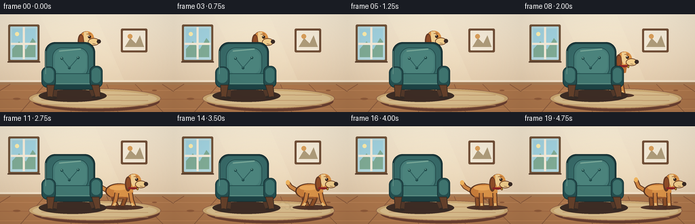
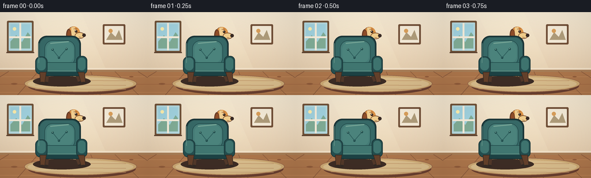
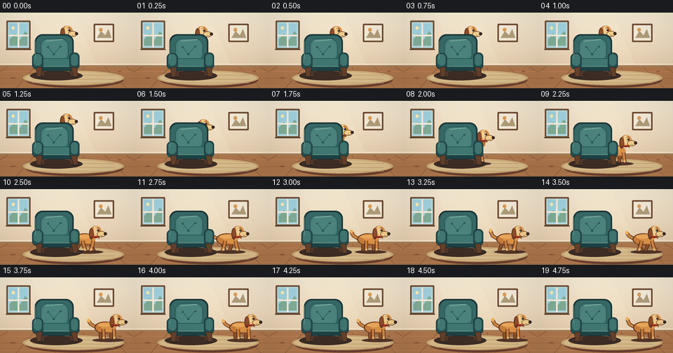

CODING AGENTS AS PIXEL WORLD MODELS
traex/GPT-5.6-Sol · dynamic_spatial_relationship_0005
点击播放 · 原生 RGB 像素
逐轮保存的候选
回放视频、检查图与代码变化。
每份候选均可单独播放。实际图片检查记录在下方工具轨迹中。
候选 01播放与检查图
点击播放 · 原生 RGB 像素

展开代码变化
--- 上一保存版本
+++ 本次保存版本
@@ -0,0 +1,250 @@
+from pathlib import Path
+import math
+import numpy as np
+from PIL import Image, ImageDraw, ImageFilter
+import artifact_io
+
+W, H, N = 256, 144, 20
+SS = 4
+rng = np.random.default_rng(1207)
+
+def sc(v):
+ return int(round(v * SS))
+
+def box(b):
+ return tuple(sc(v) for v in b)
+
+def pts(p):
+ return [(sc(x), sc(y)) for x, y in p]
+
+def rounded(draw, b, r, fill, outline=None, width=1):
+ draw.rounded_rectangle(box(b), radius=sc(r), fill=fill, outline=outline, width=sc(width))
+
+def ellipse(draw, b, fill, outline=None, width=1):
+ draw.ellipse(box(b), fill=fill, outline=outline, width=sc(width))
+
+def line(draw, p, fill, width=1, joint='curve'):
+ draw.line(pts(p), fill=fill, width=sc(width), joint=joint)
+
+def poly(draw, p, fill, outline=None):
+ draw.polygon(pts(p), fill=fill)
+ if outline:
+ draw.line(pts(p + [p[0]]), fill=outline, width=sc(1), joint='curve')
+
+def background():
+ h, w = H*SS, W*SS
+ yy = np.arange(h)[:, None]
+ wall_top = np.array([247, 235, 213], dtype=float)
+ wall_bottom = np.array([229, 205, 174], dtype=float)
+ a = np.minimum(yy/(104*SS), 1.0)[..., None]
+ arr = wall_top[None,None,:]*(1-a) + wall_bottom[None,None,:]*a
+ arr = np.repeat(arr, w, axis=1)
+ # Very light hand-painted grain.
+ noise = rng.normal(0, 0.9, (h,w,1))
+ arr = np.clip(arr + noise, 0, 255).astype(np.uint8)
+ im = Image.fromarray(arr, 'RGB')
+ d = ImageDraw.Draw(im)
+ # soft sunlight on wall
+ overlay = Image.new('RGBA', im.size, (0,0,0,0)); od = ImageDraw.Draw(overlay)
+ od.polygon(pts([(58,0),(140,0),(184,101),(108,101)]), fill=(255,248,215,35))
+ im = Image.alpha_composite(im.convert('RGBA'), overlay)
+ d = ImageDraw.Draw(im)
+ # window and view
+ rounded(d, (12,15,58,70), 2, (113,83,57,255))
+ rounded(d, (15,18,55,67), 1, (182,218,224,255))
+ # sky panes
+ d.rectangle(box((18,21,52,63)), fill=(162,211,224,255))
+ d.polygon(pts([(18,51),(28,40),(38,52),(48,35),(52,40),(52,63),(18,63)]), fill=(129,173,151,255))
+ d.ellipse(box((22,26,28,32)), fill=(255,239,174,255))
+ d.rectangle(box((33.5,19,36.5,66)), fill=(247,238,220,255))
+ d.rectangle(box((16,42,54,45)), fill=(247,238,220,255))
+ line(d, [(11,70),(59,70)], (92,65,46,255), 2)
+ # small framed art, deliberately subdued
+ rounded(d, (178,21,217,56), 2, (113,79,55,255))
+ rounded(d, (181,24,214,53), 1, (245,235,216,255))
+ poly(d, [(184,48),(192,35),(200,43),(206,31),(212,48)], (176,157,123,255))
+ ellipse(d, (188,29,195,36), (218,159,91,255))
+ # baseboard
+ d.rectangle(box((0,97,256,103)), fill=(242,225,200,255))
+ d.rectangle(box((0,100,256,104)), fill=(169,126,87,255))
+ # wooden floor with perspective and warm tonal bands
+ d.rectangle(box((0,104,256,144)), fill=(174,119,76,255))
+ for y, c in [(112,(188,132,87,255)),(125,(163,105,68,255)),(139,(192,132,85,255))]:
+ line(d, [(0,y),(256,y)], c, 1)
+ for x in [-40,15,66,113,157,199,239,278]:
+ xb = 128 + (x-128)*1.58
+ line(d, [(x,103),(xb,144)], (139,91,61,190), 1)
+ # floor knots
+ ellipse(d, (19,123,30,126), (145,92,59,130))
+ ellipse(d, (224,111,231,113), (145,92,59,110))
+ # rug under the action
+ ellipse(d, (48,113,235,143), (107,64,48,65))
+ ellipse(d, (42,109,237,139), (206,170,116,255), (149,101,73,255), 1)
+ ellipse(d, (48,113,231,136), (218,190,141,255))
+ # rug stripes
+ for yy0 in (118,126,133):
+ line(d, [(61,yy0),(218,yy0+1)], (190,145,102,180), 1)
+ return im
+
+def draw_dust(im, x, frame):
+ if not (7 <= frame <= 14): return
+ layer = Image.new('RGBA', im.size, (0,0,0,0)); d=ImageDraw.Draw(layer)
+ q = (frame-7)
+ for k in range(3):
+ cx = x - 25 - k*7 - q*0.4
+ cy = 120 - k*2
+ r = 2.8 + k*1.1
+ ellipse(d, (cx-r,cy-r,cx+r,cy+r), (230,207,165,max(18,75-k*16)))
+ im.alpha_composite(layer.filter(ImageFilter.GaussianBlur(sc(.8))))
+
+def draw_dog(im, cx, base_y, phase, head_y=None, speed=1.0, settle=False):
+ """Friendly golden dog in profile, facing right. It is composited before the chair."""
+ d = ImageDraw.Draw(im)
+ s = .92
+ # Ground contact shadow. It stays behind the chair too, reinforcing depth.
+ ellipse(d, (cx-27,base_y-4,cx+33,base_y+3), (84,55,43,68))
+ # Tail: curved, outlined stroke, with wag continuing after arrival.
+ wag = math.sin(phase + (0.8 if settle else 0))*5
+ tail = [(cx-20,base_y-25),(cx-30,base_y-31),(cx-34,base_y-39+wag*.45)]
+ line(d, tail, (102,59,35,255), 7)
+ line(d, tail, (204,133,67,255), 4.6)
+ ellipse(d, (cx-37,base_y-43+wag*.45,cx-31,base_y-36+wag*.45), (239,180,94,255))
+
+ # Running legs. Use alternating reach and a darker far pair.
+ if settle:
+ reaches = [(-12,1),(9,1),(-6,1),(14,1)]
+ else:
+ g = math.sin(phase)
+ reaches = [(-12,8*g),(9,-8*g),(-7,-7*g),(14,7*g)]
+ hips = [cx-12,cx+8,cx-6,cx+14]
+ colors = [(144,82,42,255),(145,81,40,255),(201,126,61,255),(210,135,66,255)]
+ # far legs first
+ for idx in (0,1):
+ hx=hips[idx]; reach=reaches[idx][1]
+ knee=(hx+reach*.32,base_y-12)
+ paw=(hx+reach,base_y-1)
+ line(d, [(hx,base_y-22),knee,paw], (91,54,35,255), 7)
+ line(d, [(hx,base_y-22),knee,paw], colors[idx], 4.2)
+ ellipse(d, (paw[0]-4,paw[1]-2,paw[0]+5,paw[1]+2), (79,50,37,255))
+ # body outline, chest, and golden fill
+ ellipse(d, (cx-23,base_y-36,cx+18,base_y-13), (91,53,34,255))
+ ellipse(d, (cx-21,base_y-35,cx+18,base_y-14), (201,126,59,255))
+ ellipse(d, (cx-10,base_y-34,cx+18,base_y-14), (220,148,72,255))
+ # warm back highlight and belly shade
+ ellipse(d, (cx-17,base_y-33,cx+9,base_y-26), (235,169,91,135))
+ line(d, [(cx-16,base_y-16),(cx+10,base_y-15)], (151,84,44,220), 2)
+ # near legs
+ for idx in (2,3):
+ hx=hips[idx]; reach=reaches[idx][1]
+ knee=(hx+reach*.28,base_y-12)
+ paw=(hx+reach,base_y-1)
+ line(d, [(hx,base_y-22),knee,paw], (91,53,34,255), 7)
+ line(d, [(hx,base_y-22),knee,paw], colors[idx], 4.4)
+ # cream socks and compact paws
+ line(d, [(knee[0],knee[1]+5),paw], (235,190,119,255), 3.4)
+ ellipse(d, (paw[0]-4,paw[1]-2,paw[0]+5,paw[1]+2), (89,55,39,255))
+
+ # Neck links body to head; for the peek pose it is intentionally hidden by chair.
+ hy = (base_y-39) if head_y is None else head_y
+ hx = cx+18
+ poly(d, [(cx+7,base_y-31),(cx+21,base_y-34),(hx+5,hy+8),(hx-7,hy+9)], (190,111,52,255))
+ # floppy far ear, head outline and face
+ ellipse(d, (hx-10,hy-11,hx+11,hy+12), (91,52,33,255))
+ ellipse(d, (hx-9,hy-11,hx+12,hy+11), (220,147,71,255))
+ # forehead blaze
+ poly(d, [(hx-3,hy-10),(hx+3,hy-10),(hx+6,hy+4),(hx,hy+8),(hx-3,hy+2)], (242,207,145,255))
+ # visible floppy ear
+ ellipse(d, (hx-12,hy-7,hx-3,hy+15), (104,59,37,255))
+ ellipse(d, (hx-10,hy-5,hx-4,hy+11), (145,78,41,255))
+ # muzzle projecting right
+ ellipse(d, (hx+3,hy-1,hx+20,hy+10), (241,205,139,255), (106,61,37,255), 1)
+ ellipse(d, (hx+16,hy+1,hx+22,hy+7), (58,43,37,255))
+ # eye, catchlight, brow
+ ellipse(d, (hx+3,hy-5,hx+7.5,hy-.5), (54,37,29,255))
+ ellipse(d, (hx+4,hy-4.4,hx+5.3,hy-3.1), (255,250,228,255))
+ line(d, [(hx+1,hy-7),(hx+7,hy-7.5)], (132,74,39,255), 1)
+ # red collar and tiny tag
+ line(d, [(hx-7,hy+10),(hx+7,hy+10)], (145,38,38,255), 3)
+ ellipse(d, (hx+5,hy+9,hx+8,hy+13), (235,186,52,255), (104,65,30,255), 1)
+ # smile / panting hint
+ line(d, [(hx+10,hy+7),(hx+14,hy+7.8)], (87,47,35,255), .8)
+
+def draw_chair(im):
+ """Substantial foreground armchair. Drawing it after the dog establishes 'behind'."""
+ d=ImageDraw.Draw(im)
+ # floor shadow and rear legs
+ ellipse(d, (57,111,157,129), (62,45,37,75))
+ poly(d, [(75,104),(85,104),(83,124),(77,124)], (83,57,42,255))
+ poly(d, [(128,103),(138,103),(142,122),(136,123)], (83,57,42,255))
+ ellipse(d, (75,121,84,125), (52,42,37,255)); ellipse(d, (135,120,144,124), (52,42,37,255))
+ # back silhouette and upholstery
+ rounded(d, (66,41,140,103), 15, (37,71,72,255), (24,50,53,255), 2)
+ rounded(d, (69,44,137,101), 13, (55,105,103,255))
+ # back cushion, central glow
+ rounded(d, (77,49,130,93), 14, (70,124,119,255), (35,75,75,255), 1)
+ rounded(d, (81,52,127,88), 12, (76,132,125,255))
+ # fabric highlight
+ line(d, [(87,54),(119,51)], (119,166,151,110), 2)
+ # tufting buttons and seams
+ for x,y in [(91,65),(115,64),(102,79)]:
+ ellipse(d, (x-2,y-2,x+2,y+2), (31,73,73,255))
+ ellipse(d, (x-1.2,y-1.4,x+.4,y+.1), (115,163,149,210))
+ line(d, [(91,65),(102,79),(115,64)], (43,91,90,150), 1)
+ # seat front
+ rounded(d, (72,88,143,111), 8, (29,66,68,255), (22,48,51,255), 1)
+ rounded(d, (77,87,139,104), 7, (65,119,113,255), (33,75,75,255), 1)
+ line(d, [(83,102),(133,102)], (104,150,136,130), 1)
+ # arms in very front
+ rounded(d, (61,77,82,108), 9, (37,79,80,255), (23,51,54,255), 1)
+ rounded(d, (64,79,79,101), 7, (65,119,114,255))
+ rounded(d, (132,76,151,108), 8, (36,77,78,255), (23,50,52,255), 1)
+ rounded(d, (135,79,148,101), 6, (63,116,111,255))
+ # front legs
+ poly(d, [(69,104),(80,104),(77,124),(70,124)], (101,65,43,255), (56,43,35,255))
+ poly(d, [(135,104),(146,104),(148,123),(141,124)], (101,65,43,255), (56,43,35,255))
+ ellipse(d, (68,121,78,126), (54,43,37,255)); ellipse(d, (140,121,150,125), (54,43,37,255))
+ # small specular piping
+ line(d, [(67,54),(67,88)], (103,148,137,100), 1)
+
+def frame_params(i):
+ # Clear three-act timing: observe behind, run out, settle at right.
+ if i <= 5:
+ x = 108.5 + .6*math.sin(i*.8)
+ hy = 36.0 + .8*math.sin(i*.9) # face visible above the chair back
+ return x, 120, hy, i*.3, 0.0, False
+ if i <= 14:
+ u = (i-5)/9.0
+ # smooth acceleration/deceleration from behind chair to its right
+ ease = u*u*(3-2*u)
+ x = 109 + (202-109)*ease
+ normal_hy = 120-39
+ hy = 36*(1-min(1,u*2.0)) + normal_hy*min(1,u*2.0)
+ return x, 120, hy, (i-5)*2.25, 1.0, False
+ # final stance is wholly to the right, with a subtle breathing/wag motion
+ x = 202.5 + .5*math.sin((i-15)*.5)
+ by = 120 + .25*math.sin((i-15)*.9)
+ return x, by, None, (i-15)*.8, 0.0, True
+
+def make_frame(i):
+ im=background()
+ x, by, hy, phase, speed, settle = frame_params(i)
+ draw_dust(im, x, i)
+ draw_dog(im, x, by, phase, head_y=hy, speed=speed, settle=settle)
+ draw_chair(im)
+ # Gentle vignette unifies scene without obscuring the spatial action.
+ rgb=np.array(im.convert('RGB'), dtype=np.float32)
+ hh,ww=rgb.shape[:2]
+ yy,xx=np.mgrid[0:hh,0:ww]
+ dx=(xx-ww*.5)/(ww*.72); dy=(yy-hh*.48)/(hh*.8)
+ vig=np.clip(1-.105*(dx*dx+dy*dy),.86,1)[...,None]
+ rgb=np.clip(rgb*vig,0,255).astype(np.uint8)
+ out=Image.fromarray(rgb).resize((W,H), Image.Resampling.LANCZOS)
+ return np.asarray(out.convert('RGB'), dtype=np.uint8)
+
+def main():
+ frames=np.stack([make_frame(i) for i in range(N)], axis=0)
+ assert frames.shape == (20,144,256,3) and frames.dtype == np.uint8
+ artifact_io.save(frames, Path(__file__).resolve().parent)
+
+if __name__ == '__main__':
+ main()
候选 02播放与检查图
点击播放 · 原生 RGB 像素

展开代码变化
--- 上一保存版本
+++ 本次保存版本
@@ -42,7 +42,7 @@
# Very light hand-painted grain.
noise = rng.normal(0, 0.9, (h,w,1))
arr = np.clip(arr + noise, 0, 255).astype(np.uint8)
- im = Image.fromarray(arr, 'RGB')
+ im = Image.fromarray(arr)
d = ImageDraw.Draw(im)
# soft sunlight on wall
overlay = Image.new('RGBA', im.size, (0,0,0,0)); od = ImageDraw.Draw(overlay)
可观测工具轨迹
实际执行的命令与返回图片。
命令 1exit 0
/bin/bash -lc "cat prompt.txt && printf '\\n--- GENERATION_RULES ---\\n' && cat GENERATION_RULES.md && printf '\\n--- TASK_SPEC ---\\n' && cat task_spec.json"
命令 2exit 0
/bin/bash -lc "find . -maxdepth 2 -type f -printf '%p\\n' | sort && printf '\\n--- tools ---\\n' && command -v ffmpeg || true && command -v convert || true && python3 - <<'PY'
try:
import PIL; print('PIL', PIL.__version__)
except Exception as e: print('no PIL',e)
try:
import cv2; print('cv2', cv2.__version__)
except Exception as e: print('no cv2',e)
PY"命令 3exit 0
/bin/bash -lc "sed -n '1,240p' artifact_io.py"
命令 4exit 0
/bin/bash -lc "cat > generate.py <<'PY'
from pathlib import Path
import math
import numpy as np
from PIL import Image, ImageDraw, ImageFilter
import artifact_io
W, H, N = 256, 144, 20
SS = 4
rng = np.random.default_rng(1207)
def sc(v):
return int(round(v * SS))
def box(b):
return tuple(sc(v) for v in b)
def pts(p):
return [(sc(x), sc(y)) for x, y in p]
def rounded(draw, b, r, fill, outline=None, width=1):
draw.rounded_rectangle(box(b), radius=sc(r), fill=fill, outline=outline, width=sc(width))
def ellipse(draw, b, fill, outline=None, width=1):
draw.ellipse(box(b), fill=fill, outline=outline, width=sc(width))
def line(draw, p, fill, width=1, joint='curve'):
draw.line(pts(p), fill=fill, width=sc(width), joint=joint)
def poly(draw, p, fill, outline=None):
draw.polygon(pts(p), fill=fill)
if outline:
draw.line(pts(p + [p[0]]), fill=outline, width=sc(1), joint='curve')
def background():
h, w = H*SS, W*SS
yy = np.arange(h)[:, None]
wall_top = np.array([247, 235, 213], dtype=float)
wall_bottom = np.array([229, 205, 174], dtype=float)
a = np.minimum(yy/(104*SS), 1.0)[..., None]
arr = wall_top[None,None,:]*(1-a) + wall_bottom[None,None,:]*a
arr = np.repeat(arr, w, axis=1)
# Very light hand-painted grain.
noise = rng.normal(0, 0.9, (h,w,1))
arr = np.clip(arr + noise, 0, 255).astype(np.uint8)
im = Image.fromarray(arr, 'RGB')
d = ImageDraw.Draw(im)
# soft sunlight on wall
overlay = Image.new('RGBA', im.size, (0,0,0,0)); od = ImageDraw.Draw(overlay)
od.polygon(pts([(58,0),(140,0),(184,101),(108,101)]), fill=(255,248,215,35))
im = Image.alpha_composite(im.convert('RGBA'), overlay)
d = ImageDraw.Draw(im)
# window and view
rounded(d, (12,15,58,70), 2, (113,83,57,255))
rounded(d, (15,18,55,67), 1, (182,218,224,255))
# sky panes
d.rectangle(box((18,21,52,63)), fill=(162,211,224,255))
d.polygon(pts([(18,51),(28,40),(38,52),(48,35),(52,40),(52,63),(18,63)]), fill=(129,173,151,255))
d.ellipse(box((22,26,28,32)), fill=(255,239,174,255))
d.rectangle(box((33.5,19,36.5,66)), fill=(247,238,220,255))
d.rectangle(box((16,42,54,45)), fill=(247,238,220,255))
line(d, [(11,70),(59,70)], (92,65,46,255), 2)
# small framed art, deliberately subdued
rounded(d, (178,21,217,56), 2, (113,79,55,255))
rounded(d, (181,24,214,53), 1, (245,235,216,255))
poly(d, [(184,48),(192,35),(200,43),(206,31),(212,48)], (176,157,123,255))
ellipse(d, (188,29,195,36), (218,159,91,255))
# baseboard
d.rectangle(box((0,97,256,103)), fill=(242,225,200,255))
d.rectangle(box((0,100,256,104)), fill=(169,126,87,255))
# wooden floor with perspective and warm tonal bands
d.rectangle(box((0,104,256,144)), fill=(174,119,76,255))
for y, c in [(112,(188,132,87,255)),(125,(163,105,68,255)),(139,(192,132,85,255))]:
line(d, [(0,y),(256,y)], c, 1)
for x in [-40,15,66,113,157,199,239,278]:
xb = 128 + (x-128)*1.58
line(d, [(x,103),(xb,144)], (139,91,61,190), 1)
# floor knots
ellipse(d, (19,123,30,126), (145,92,59,130))
ellipse(d, (224,111,231,113), (145,92,59,110))
# rug under the action
ellipse(d, (48,113,235,143), (107,64,48,65))
ellipse(d, (42,109,237,139), (206,170,116,255), (149,101,73,255), 1)
ellipse(d, (48,113,231,136), (218,190,141,255))
# rug stripes
for yy0 in (118,126,133):
line(d, [(61,yy0),(218,yy0+1)], (190,145,102,180), 1)
return im
def draw_dust(im, x, frame):
if not (7 <= frame <= 14): return
layer = Image.new('RGBA', im.size, (0,0,0,0)); d=ImageDraw.Draw(layer)
q = (frame-7)
for k in range(3):
cx = x - 25 - k*7 - q*0.4
cy = 120 - k*2
r = 2.8 + k*1.1
ellipse(d, (cx-r,cy-r,cx+r,cy+r), (230,207,165,max(18,75-k*16)))
im.alpha_composite(layer.filter(ImageFilter.GaussianBlur(sc(.8))))
def draw_dog(im, cx, base_y, phase, head_y=None, speed=1.0, settle=False):
\"\"\"Friendly golden dog in profile, facing right. It is composited before the chair.\"\"\"
d = ImageDraw.Draw(im)
s = .92
# Ground contact shadow. It stays behind the chair too, reinforcing depth.
ellipse(d, (cx-27,base_y-4,cx+33,base_y+3), (84,55,43,68))
# Tail: curved, outlined stroke, with wag continuing after arrival.
wag = math.sin(phase + (0.8 if settle else 0))*5
tail = [(cx-20,base_y-25),(cx-30,base_y-31),(cx-34,base_y-39+wag*.45)]
line(d, tail, (102,59,35,255), 7)
line(d, tail, (204,133,67,255), 4.6)
ellipse(d, (cx-37,base_y-43+wag*.45,cx-31,base_y-36+wag*.45), (239,180,94,255))
# Running legs. Use alternating reach and a darker far pair.
if settle:
reaches = [(-12,1),(9,1),(-6,1),(14,1)]
else:
g = math.sin(phase)
reaches = [(-12,8*g),(9,-8*g),(-7,-7*g),(14,7*g)]
hips = [cx-12,cx+8,cx-6,cx+14]
colors = [(144,82,42,255),(145,81,40,255),(201,126,61,255),(210,135,66,255)]
# far legs first
for idx in (0,1):
hx=hips[idx]; reach=reaches[idx][1]
knee=(hx+reach*.32,base_y-12)
paw=(hx+reach,base_y-1)
line(d, [(hx,base_y-22),knee,paw], (91,54,35,255), 7)
line(d, [(hx,base_y-22),knee,paw], colors[idx], 4.2)
ellipse(d, (paw[0]-4,paw[1]-2,paw[0]+5,paw[1]+2), (79,50,37,255))
# body outline, chest, and golden fill
ellipse(d, (cx-23,base_y-36,cx+18,base_y-13), (91,53,34,255))
ellipse(d, (cx-21,base_y-35,cx+18,base_y-14), (201,126,59,255))
ellipse(d, (cx-10,base_y-34,cx+18,base_y-14), (220,148,72,255))
# warm back highlight and belly shade
ellipse(d, (cx-17,base_y-33,cx+9,base_y-26), (235,169,91,135))
line(d, [(cx-16,base_y-16),(cx+10,base_y-15)], (151,84,44,220), 2)
# near legs
for idx in (2,3):
hx=hips[idx]; reach=reaches[idx][1]
knee=(hx+reach*.28,base_y-12)
paw=(hx+reach,base_y-1)
line(d, [(hx,base_y-22),knee,paw], (91,53,34,255), 7)
line(d, [(hx,base_y-22),knee,paw], colors[idx], 4.4)
# cream socks and compact paws
line(d, [(knee[0],knee[1]+5),paw], (235,190,119,255), 3.4)
ellipse(d, (paw[0]-4,paw[1]-2,paw[0]+5,paw[1]+2), (89,55,39,255))
# Neck links body to head; for the peek pose it is intentionally hidden by chair.
hy = (base_y-39) if head_y is None else head_y
hx = cx+18
poly(d, [(cx+7,base_y-31),(cx+21,base_y-34),(hx+5,hy+8),(hx-7,hy+9)], (190,111,52,255))
# floppy far ear, head outline and face
ellipse(d, (hx-10,hy-11,hx+11,hy+12), (91,52,33,255))
ellipse(d, (hx-9,hy-11,hx+12,hy+11), (220,147,71,255))
# forehead blaze
poly(d, [(hx-3,hy-10),(hx+3,hy-10),(hx+6,hy+4),(hx,hy+8),(hx-3,hy+2)], (242,207,145,255))
# visible floppy ear
ellipse(d, (hx-12,hy-7,hx-3,hy+15), (104,59,37,255))
ellipse(d, (hx-10,hy-5,hx-4,hy+11), (145,78,41,255))
# muzzle projecting right
ellipse(d, (hx+3,hy-1,hx+20,hy+10), (241,205,139,255), (106,61,37,255), 1)
ellipse(d, (hx+16,hy+1,hx+22,hy+7), (58,43,37,255))
# eye, catchlight, brow
ellipse(d, (hx+3,hy-5,hx+7.5,hy-.5), (54,37,29,255))
ellipse(d, (hx+4,hy-4.4,hx+5.3,hy-3.1), (255,250,228,255))
line(d, [(hx+1,hy-7),(hx+7,hy-7.5)], (132,74,39,255), 1)
# red collar and tiny tag
line(d, [(hx-7,hy+10),(hx+7,hy+10)], (145,38,38,255), 3)
ellipse(d, (hx+5,hy+9,hx+8,hy+13), (235,186,52,255), (104,65,30,255), 1)
# smile / panting hint
line(d, [(hx+10,hy+7),(hx+14,hy+7.8)], (87,47,35,255), .8)
def draw_chair(im):
\"\"\"Substantial foreground armchair. Drawing it after the dog establishes 'behind'.\"\"\"
d=ImageDraw.Draw(im)
# floor shadow and rear legs
ellipse(d, (57,111,157,129), (62,45,37,75))
poly(d, [(75,104),(85,104),(83,124),(77,124)], (83,57,42,255))
poly(d, [(128,103),(138,103),(142,122),(136,123)], (83,57,42,255))
ellipse(d, (75,121,84,125), (52,42,37,255)); ellipse(d, (135,120,144,124), (52,42,37,255))
# back silhouette and upholstery
rounded(d, (66,41,140,103), 15, (37,71,72,255), (24,50,53,255), 2)
rounded(d, (69,44,137,101), 13, (55,105,103,255))
# back cushion, central glow
rounded(d, (77,49,130,93), 14, (70,124,119,255), (35,75,75,255), 1)
rounded(d, (81,52,127,88), 12, (76,132,125,255))
# fabric highlight
line(d, [(87,54),(119,51)], (119,166,151,110), 2)
# tufting buttons and seams
for x,y in [(91,65),(115,64),(102,79)]:
ellipse(d, (x-2,y-2,x+2,y+2), (31,73,73,255))
ellipse(d, (x-1.2,y-1.4,x+.4,y+.1), (115,163,149,210))
line(d, [(91,65),(102,79),(115,64)], (43,91,90,150), 1)
# seat front
rounded(d, (72,88,143,111), 8, (29,66,68,255), (22,48,51,255), 1)
rounded(d, (77,87,139,104), 7, (65,119,113,255), (33,75,75,255), 1)
line(d, [(83,102),(133,102)], (104,150,136,130), 1)
# arms in very front
rounded(d, (61,77,82,108), 9, (37,79,80,255), (23,51,54,255), 1)
rounded(d, (64,79,79,101), 7, (65,119,114,255))
rounded(d, (132,76,151,108), 8, (36,77,78,255), (23,50,52,255), 1)
rounded(d, (135,79,148,101), 6, (63,116,111,255))
# front legs
poly(d, [(69,104),(80,104),(77,124),(70,124)], (101,65,43,255), (56,43,35,255))
poly(d, [(135,104),(146,104),(148,123),(141,124)], (101,65,43,255), (56,43,35,255))
ellipse(d, (68,121,78,126), (54,43,37,255)); ellipse(d, (140,121,150,125), (54,43,37,255))
# small specular piping
line(d, [(67,54),(67,88)], (103,148,137,100), 1)
def frame_params(i):
# Clear three-act timing: observe behind, run out, settle at right.
if i <= 5:
x = 108.5 + .6*math.sin(i*.8)
hy = 36.0 + .8*math.sin(i*.9) # face visible above the chair back
return x, 120, hy, i*.3, 0.0, False
if i <= 14:
u = (i-5)/9.0
# smooth acceleration/deceleration from behind chair to its right
ease = u*u*(3-2*u)
x = 109 + (202-109)*ease
normal_hy = 120-39
hy = 36*(1-min(1,u*2.0)) + normal_hy*min(1,u*2.0)
return x, 120, hy, (i-5)*2.25, 1.0, False
# final stance is wholly to the right, with a subtle breathing/wag motion
x = 202.5 + .5*math.sin((i-15)*.5)
by = 120 + .25*math.sin((i-15)*.9)
return x, by, None, (i-15)*.8, 0.0, True
def make_frame(i):
im=background()
x, by, hy, phase, speed, settle = frame_params(i)
draw_dust(im, x, i)
draw_dog(im, x, by, phase, head_y=hy, speed=speed, settle=settle)
draw_chair(im)
# Gentle vignette unifies scene without obscuring the spatial action.
rgb=np.array(im.convert('RGB'), dtype=np.float32)
hh,ww=rgb.shape[:2]
yy,xx=np.mgrid[0:hh,0:ww]
dx=(xx-ww*.5)/(ww*.72); dy=(yy-hh*.48)/(hh*.8)
vig=np.clip(1-.105*(dx*dx+dy*dy),.86,1)[...,None]
rgb=np.clip(rgb*vig,0,255).astype(np.uint8)
out=Image.fromarray(rgb).resize((W,H), Image.Resampling.LANCZOS)
return np.asarray(out.convert('RGB'), dtype=np.uint8)
def main():
frames=np.stack([make_frame(i) for i in range(N)], axis=0)
assert frames.shape == (20,144,256,3) and frames.dtype == np.uint8
artifact_io.save(frames, Path(__file__).resolve().parent)
if __name__ == '__main__':
main()
PY
python3 generate.py
python3 - <<'PY'
import numpy as np
from PIL import Image
p=np.load('pixels.npz')['pixels']
print('pixels',p.shape,p.dtype,'range',p.min(),p.max())
for f in [0,5,8,10,12,14,19]:
im=Image.open(f'frames/{f:02d}.png'); print(f, im.mode, im.size)
PY"命令 5exit 0
/bin/bash -lc "python3 - <<'PY'
from PIL import Image,ImageDraw
W,H=256,144
thumb=(192,108)
out=Image.new('RGB',(thumb[0]*5, (thumb[1]+18)*4),(25,27,30))
d=ImageDraw.Draw(out)
for i in range(20):
im=Image.open(f'frames/{i:02d}.png').resize(thumb,Image.Resampling.LANCZOS)
x=(i%5)*thumb[0]; y=(i//5)*(thumb[1]+18)
out.paste(im,(x,y+18)); d.text((x+4,y+2),f'{i:02d} {i/4:.2f}s',fill='white')
out.save('all_frames.png')
PY"命令 6exit 0
/bin/bash -lc "python3 - <<'PY'
p='generate.py'
s=open(p).read().replace(\"Image.fromarray(arr, 'RGB')\", \"Image.fromarray(arr)\")
open(p,'w').write(s)
PY
python3 generate.py
python3 - <<'PY'
from pathlib import Path
import numpy as np
from PIL import Image
case=Path('.')
z=np.load(case/'pixels.npz')['pixels']
assert z.shape==(144,256,20) and z.dtype==np.uint32
# unpack and check sequential variation + correspondence to saved frames
rgb=np.empty((20,144,256,3),np.uint8)
q=z.transpose(2,0,1)
rgb[...,0]=(q>>16)&255; rgb[...,1]=(q>>8)&255; rgb[...,2]=q&255
assert all(np.array_equal(rgb[i],np.asarray(Image.open(case/f'frames/{i:02d}.png'))) for i in range(20))
diff=np.mean(np.abs(rgb[1:].astype(np.int16)-rgb[:-1].astype(np.int16)),axis=(1,2,3))
print('validated RGB sequence:', rgb.shape, rgb.dtype)
print('frame-to-frame mean absolute differences:', np.round(diff,2).tolist())
print('outputs:', {p.name:p.stat().st_size for p in [case/'pixels.npz',case/'index.html',case/'inspection.png']})
PY"视觉工具实际返回图片 1

视觉工具实际返回图片 2

视觉工具实际返回图片 3

保存候选 2 份；完成命令 6 次；可验证图片返回 3 张。原始 API 响应与完整日志保留在本地。